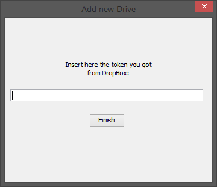
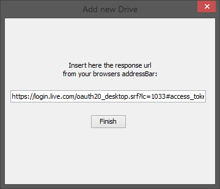

How to start using application
To use the application, you will need Java 8 JRE, browser, and cloud storage accounts on Dropbox, Google Drive, or Microsoft Onedrive.
Once you have the application jar: cluedrive-application-1.0.jar Double click and wait a little to start.
Don't know what to do after application started
Here is the "welcome" screen after first. Click on the marked spot. Add new drive, and you can enjoy using the application. Create folders, upload files. Download them later on...

Adding new drives
You can add new drives by clicking the Add new Drive for more space or opening the File -> Add new Drive menu, on the menu bar.
Either way you choose, the next window will open, where you can choose provider:

You can select a cloud storage provider by clicking on them. When you select a provider it's background will become light green. If you have decided which providers account you want to attach to this application, than click on Authorize
At this moment your default browser will open the authorization web page of the selected provider, and asks you to log in (if you were not logged in previously), and authorize ClueDrive to access your files on cloud.
Here the authorization flow is different for the different providers:
Dropbox:
Copy the access token as the web page suggests, paste it to the text area in the application and click on Finish
 Google Drive:
After you finish with authorization, you can close the web page. That's all. You will see the new drive on list.
OneDrive:
When authorization finishes, you will see an empty web page. Copy the long text from your browser address bar, paste it to the text area in the application and click on Finish

When authorization is finished, you can close your browser, it is not needed anymore.
I registered drives, but I don't know what to do
If you managed to authorize ClueDrive to access your files on at least one cloud storage than you should see something similar in the application:
What you see on the picture above, is normal. It says, that you don't have anything in the folder named Cloud on your registered storages.
It's time to add something to your cloud. Don't you know ho to do it? Check out the next help point.
Explanation of the application surface
This poin explains what the icons on the applications surface mean
In addition, the Total size in the left top corner, means that on your clouds you can store maximum that size of files. When you store on your registered cloud other files than this application can see, your practical storage becomes less, since the other files take storage space too.
The menu bar
-
File
Add drive
You can register new cloud storage provider from here too.Set local directory
You can change the local save directory. When you download files to open they will be always saved to that location.Refresh
You can refresh the current folder manually.Exit
Shuts down the application
-
About
GitHUB
Opens the GitHUB repository of the projectHelp
Opens this documentation
What are the icons on the surface
The first object, which is mainly blue, is a file. You can download it by double clicking on it, it will be saved according to your local storage path + cloud path. The file will be opened by the default application attached to that extension.
The rest of the objects are folders, you can open them by double clicking on them.
When you click only once. A little tick will open between the file, or folder icon and its name. If you click again on a selected item, the tick disappears. When at least one item is selected in the top right corner you will see an icon which says Erase selection. Clicking on it will de-select all selected items. If items are selected you can delete them.
Strange Internal Error pop-up
When this happens something really bad happened. In this case you need to shut down the application and do the following:
- Delete the ClueDrive folder from your home Documents folder.
On Windows: C:\Users\{your user name}\Documents\ClueDrive,
On Linux: /home/{your user name}/Documents/ClueDrive.
Try to run the application again. You will need to register to the cloud storages again.
- If first step did not succeeded. Than you must log in to your cloud provider in a browser, find the folder named Cloud, delete it, and start again with step 1.
OneDrive disappeared from drives list
The access token is not alive too long, when it expires, the drive is removed from the list, but If you register again, you will see your files from there again.
Other cloud providers does not have this problem. They grant lifetime accessTokens.